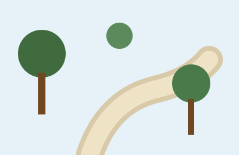
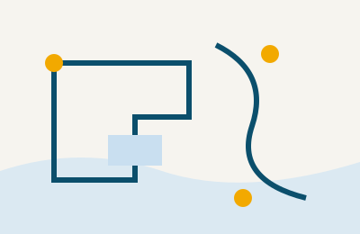
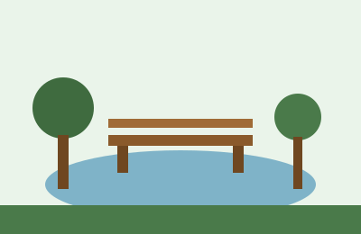

Pick a loop

The river loop
Four kilometres, all paved, two bridges. Start at the Gallup boat launch and keep the water on your left. The loop takes about fifty minutes at a talking pace and is flat the whole way.

The campus edge
Two and a half kilometres on sidewalks and a short stretch of brick path behind the museum. There are four curb cuts on the route and two steep driveways that are easier at the corner.

The old neighborhood grid
Three kilometres of tree lined streets between two parks. This walk has the most shade and the most benches. Sidewalks are brick in places, so watch your footing after rain.
Before you go
- Check the sunset time; the river path is lit, the neighborhood grid is not.
- Carry water between June and September.
- Report broken pavement to the city parks office.
If you walk all three in one afternoon you will cover about ten kilometres, which is a good way to see most of the town on foot.